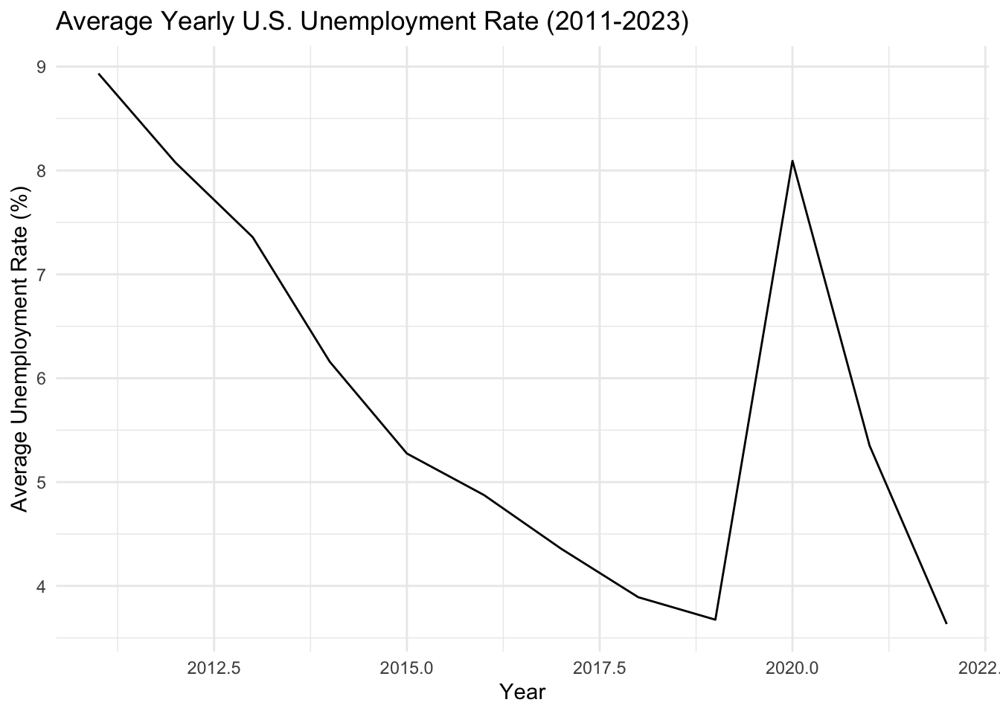

Code
library(fredr)
library(tidyverse)
library(knitr)
library(dplyr)
library(ggplot2)
library(gt)
library(sf)
library(tmap)
library(tigris)
library(gifski)
library(ggrepel)
library(gganimate)
library(tools)
library(kableExtra)This report walks you through the specific analytical question of “What does unemployment look like over time?” supporting the overarching question of “What demographic factors best explain unemployment trends across NYC?”.
The focus of this report is to look at unemployment over time, from the years 2011 through 2022, on a countrywide level. It explores unemployment overall and then hones in on a few demographic specific unemployment rates, which include: unemployment by race, gender, and be race x gender.
This report will discuss the data acquired, any pre-processing and cleaning done on the data, and how this data was analyzed to draw conclusions on unemployment trends over time.
The unemployment rate data for this analysis was obtained from the Federal Reserve Economic Data (FRED) API. FRED provides unemployment rates by demographic and geographic categories. Each unemployment rate is associated with a unique series ID, which was used to query the API and retrieve relevant data. Using the API call, we accessed these series programmatically, ensuring automated and consistent data retrieval.
You will find that for every unemployment data set retrieved, the same pre-processing and cleaning was computed to allow for consistent analysis. This involved using the filter() function from the dplyr package, which is part of the tidyverse collection of R packages, to filter our data to only include data from 2011 to 2022. Within each year, the average unemployment value was computed using the mean() function, capturing an aggregated measure representative of the year’s unemployment trends. This was done as an effort to remain consistent with the data available to answer the other analytical questions of the project.
The following libraries are all necessary libraries needed throughout the entire report.
library(fredr)
library(tidyverse)
library(knitr)
library(dplyr)
library(ggplot2)
library(gt)
library(sf)
library(tmap)
library(tigris)
library(gifski)
library(ggrepel)
library(gganimate)
library(tools)
library(kableExtra)The code below retrieves Countrywide Unemployment Rates.
The series ID for the nationwide unemployment rate is “UNRATE”. This is the Civilian Unemployment Rate.
The unemployment rate represents the number of unemployed as a percentage of the labor force. Labor force data are restricted to people 16 years of age and older, who currently reside in 1 of the 50 states or the District of Columbia, who do not reside in institutions (e.g., penal and mental facilities, homes for the aged), and who are not on active duty in the Armed Forces.
# Retrieve monthly U.S. unemployment rate data
CW_unemployment_data <- fredr_series_observations(series_id = "UNRATE")
# Filter the data for the desired range
CW_unemployment_data_filtered <- CW_unemployment_data |>
filter(date >= as.Date("2011-01-01") & date < as.Date("2023-01-01"))
CW_unemployment_yearly <- CW_unemployment_data_filtered |>
mutate(year = lubridate::year(date)) |>
group_by(year) |>
summarize(average_unemployment = mean(value))U.S. Bureau of Labor Statistics, Unemployment Rate [UNRATENSA], retrieved from FRED, Federal Reserve Bank of St. Louis; https://fred.stlouisfed.org/series/UNRATENSA, December 10, 2024.
To generate the line plot found below, the dataset CW_unemployment_data_filtered was used, with use of ggplot2 to create the visualization. The geom_line function was used to connect unemployment rate values along the timeline, and labels were added to provide context for the chart’s axes and title.
The output indicates a steady decline in the unemployment rate from 2011 through earliy 2020. The sharp spike in 2020 can be attributed to the COVID-19 pandemic’s economnic disruption. Post-2020, the unemployment rate decreased rapidly, which exemplifies the economic recovery efforts taken post-pandemic.
library(ggplot2)
ggplot(CW_unemployment_data_filtered, aes(x = date, y = value)) +
geom_line() +
labs(title = "U.S. Unemployment Rate Over Time (2011-2022)",
x = "Year",
y = "Unemployment Rate (%)") +
theme_minimal()The series below takes the US unemployment rates and adds a recession indicator to the dataset.
# Retrieve U.S. recession indicator data
recession_data <- fredr_series_observations(series_id = "USREC")
# Merge with unemployment data
unemployment_recession <- merge(CW_unemployment_data_filtered, recession_data, by = "date", suffixes = c("_unemp", "_rec"))
ggplot(unemployment_recession, aes(x = date, y = value_unemp)) +
geom_line(color = "blue") +
geom_rect(data = unemployment_recession |> filter(value_rec == 1),
aes(xmin = date, xmax = lead(date), ymin = -Inf, ymax = Inf),
fill = "red", alpha = 0.2) +
labs(title = "U.S. Unemployment Rate with Recession Periods (2011-Present)",
x = "Year",
y = "Unemployment Rate (%)") +
theme_minimal()
avg_unemployment_plot <- ggplot(CW_unemployment_yearly, aes(x = year, y = average_unemployment)) +
geom_line() +
labs(title = "Average Yearly U.S. Unemployment Rate (2011-2023)",
x = "Year",
y = "Average Unemployment Rate (%)") +
theme_minimal()
#ggsave("average_yearly_US_unemployment_rate.png", plot=avg_unemployment_plot, width =6, height=4)
avg_unemployment_plot
The code belows involves the single usage of US Census Data in answering this speicifc analytical question of the project. The file obtained is a US states shapfile. The file contains a geometric column which identifies geographic boundaries. These geographic boundaries serve to later be joined with US data to then display the patterns across the US in a map format.
library(sf)
if(!file.exists("states.zip")){
download.file("https://www2.census.gov/geo/tiger/GENZ2018/shp/cb_2018_us_state_500k.zip",
destfile="states.zip",
method="curl")
}
##-
td <- tempdir();
zip_contents <- unzip("states.zip",
exdir = td)
fname_shp <- zip_contents[grepl("shp$", zip_contents)]
zip_sf <- read_sf(fname_shp)The next few steps involve the searching process that went into the data acquisiton. In order to find all available unemployment data, I made use of the fred_series_search_text() function to find the series_ID for datasets involving the unemployment rate.
# Search for unemployment rate-related series
unemployment_search <- fredr_series_search_text("unemployment rate")
# Create the table and style it
kable(head(unemployment_search[,1:5]), format = "html") |>
kable_styling(
bootstrap_options = c("striped", "hover", "condensed", "responsive"),
full_width = FALSE
)| id | realtime_start | realtime_end | title | observation_start |
|---|---|---|---|---|
| UNRATE | 2024-12-15 | 2024-12-15 | Unemployment Rate | 1948-01-01 |
| UNRATENSA | 2024-12-15 | 2024-12-15 | Unemployment Rate | 1948-01-01 |
| LNS14000006 | 2024-12-15 | 2024-12-15 | Unemployment Rate - Black or African American | 1972-01-01 |
| LNU04000006 | 2024-12-15 | 2024-12-15 | Unemployment Rate - Black or African American | 1972-01-01 |
| NROU | 2024-12-15 | 2024-12-15 | Noncyclical Rate of Unemployment | 1949-01-01 |
| CAUR | 2024-12-15 | 2024-12-15 | Unemployment Rate in California | 1976-01-01 |
Filter for state-level unemployment rates
# Filter for state-level unemployment rate series
state_unemployment_series <- unemployment_search |>
filter(grepl("unemployment rate", title, ignore.case = TRUE)) |>
filter(grepl("state", title, ignore.case = TRUE))
# Creating and stlying table
kable(head(state_unemployment_series[,1:5]), format = "html") |>
kable_styling(
bootstrap_options = c("striped", "hover", "condensed", "responsive"),
full_width = FALSE
)| id | realtime_start | realtime_end | title | observation_start |
|---|---|---|---|---|
| M0892AUSM156SNBR | 2024-12-15 | 2024-12-15 | Unemployment Rate for United States | 1929-04-01 |
| Q0892BUSQ156SNBR | 2024-12-15 | 2024-12-15 | Unemployment Rate for United States | 1940-04-01 |
| M0892BUSM156SNBR | 2024-12-15 | 2024-12-15 | Unemployment Rate for United States | 1940-01-01 |
| M0892CUSM156NNBR | 2024-12-15 | 2024-12-15 | Unemployment Rate for United States | 1947-01-01 |
| LRUN64TTUSQ156S | 2024-12-15 | 2024-12-15 | Infra-Annual Labor Statistics: Unemployment Rate Total: From 15 to 64 Years for United States | 1970-01-01 |
| LRUN64TTUSM156S | 2024-12-15 | 2024-12-15 | Infra-Annual Labor Statistics: Unemployment Rate Total: From 15 to 64 Years for United States | 1970-01-01 |
From looking through this list, realized we need all the ids that start with the state abbreviation followed by “UR” - each of these series id’s gives us the unemployment for each state over time. The next step does additional filtering.
# List of state abbreviations
state_abbreviations <- c(
"AL", "AK", "AZ", "AR", "CA", "CO", "CT", "DE", "FL", "GA",
"HI", "ID", "IL", "IN", "IA", "KS", "KY", "LA", "ME", "MD",
"MA", "MI", "MN", "MS", "MO", "MT", "NE", "NV", "NH", "NJ",
"NM", "NY", "NC", "ND", "OH", "OK", "OR", "PA", "RI", "SC",
"SD", "TN", "TX", "UT", "VT", "VA", "WA", "WV", "WI", "WY"
)
# Filter for state unemployment series, need UR for seasonally adjusted
state_unemployment_series <- unemployment_search |>
filter(id %in% paste0(state_abbreviations, "UR"))
# Create the table and style it
kable(head(state_unemployment_series[,1:5]), format = "html") |>
kable_styling(
bootstrap_options = c("striped", "hover", "condensed", "responsive"),
full_width = FALSE
)| id | realtime_start | realtime_end | title | observation_start |
|---|---|---|---|---|
| CAUR | 2024-12-15 | 2024-12-15 | Unemployment Rate in California | 1976-01-01 |
| TXUR | 2024-12-15 | 2024-12-15 | Unemployment Rate in Texas | 1976-01-01 |
| NYUR | 2024-12-15 | 2024-12-15 | Unemployment Rate in New York | 1976-01-01 |
| FLUR | 2024-12-15 | 2024-12-15 | Unemployment Rate in Florida | 1976-01-01 |
| PAUR | 2024-12-15 | 2024-12-15 | Unemployment Rate in Pennsylvania | 1976-01-01 |
| OHUR | 2024-12-15 | 2024-12-15 | Unemployment Rate in Ohio | 1976-01-01 |
Using the filtered list of series IDs (as shown above) to fetch unemployment data for each state.
# Fetch unemployment data for all states
state_unemployment_data <- lapply(state_unemployment_series$id, function(series_id) {
fredr(
series_id = series_id,
observation_start = as.Date("2011-01-01"),
observation_end = as.Date("2022-12-31")
)
})
# Add state abbreviation to each dataframe
state_unemployment_data <- mapply(
function(data, id) {
data$state <- substr(id, 1, 2) # Extract state abbreviation
data
},
state_unemployment_data,
state_unemployment_series$id,
SIMPLIFY = FALSE
)
# Combine into a single dataframe
state_unemployment_df <- do.call(rbind, state_unemployment_data)
# Creating and styling table
kable(head(state_unemployment_df[,1:5]), format = "html") |>
kable_styling(
bootstrap_options = c("striped", "hover", "condensed", "responsive"),
full_width = FALSE
)| date | series_id | value | realtime_start | realtime_end |
|---|---|---|---|---|
| 2011-01-01 | CAUR | 12.3 | 2024-12-15 | 2024-12-15 |
| 2011-02-01 | CAUR | 12.2 | 2024-12-15 | 2024-12-15 |
| 2011-03-01 | CAUR | 12.1 | 2024-12-15 | 2024-12-15 |
| 2011-04-01 | CAUR | 12.0 | 2024-12-15 | 2024-12-15 |
| 2011-05-01 | CAUR | 12.0 | 2024-12-15 | 2024-12-15 |
| 2011-06-01 | CAUR | 12.0 | 2024-12-15 | 2024-12-15 |
Cleaning up the data to keep only the relevant columns and compute yearly averages for each state from 2011 to 2022, which is the same process as outlined above, which we conduct for each dataset.
library(dplyr)
# Clean and select relevant columns
state_unemployment_clean <- state_unemployment_df |>
select(state, date, value) |>
rename(
unemployment_rate = value # Rename value to unemployment_rate
) |>
mutate(
year = format(as.Date(date), "%Y") # Extract year from the date
)
# Compute yearly averages for each state
state_unemployment_yearly <- state_unemployment_clean |>
filter(year >= 2011 & year <= 2022) |>
group_by(state, year) |>
summarize(
avg_unemployment = mean(unemployment_rate, na.rm = TRUE),
.groups = "drop"
)
#creating and styling table
kable(head(state_unemployment_yearly), format = "html") |>
kable_styling(
bootstrap_options = c("striped", "hover", "condensed", "responsive"),
full_width = FALSE
)| state | year | avg_unemployment |
|---|---|---|
| AK | 2011 | 7.733333 |
| AK | 2012 | 7.250000 |
| AK | 2013 | 6.991667 |
| AK | 2014 | 6.741667 |
| AK | 2015 | 6.275000 |
| AK | 2016 | 6.600000 |
Performing a check on the data we create a table showing the number of yearly records for each state. We can group the data by state and count the distinct years.
library(dplyr)
library(gt)
# Count the number of years for each state
state_yearly_counts <- state_unemployment_yearly |>
group_by(state) |>
summarize(
year_count = n(), # Count the number of records (years)
.groups = "drop"
)
# Create gt table
#using invisible function to prevent table's automatic rendering
invisible(
state_yearly_counts |>
gt() |>
tab_header(
title = "Yearly Records Count by State",
subtitle = "Number of years with unemployment data (2011-2022)"
)
)
# Create the table and style it. trying additional formatting as head function wasnt working correctly
kable(state_yearly_counts |> head(5), format = "html") |>
kable_styling(
bootstrap_options = c("striped", "hover", "condensed", "responsive"),
full_width = FALSE
)| state | year_count |
|---|---|
| AK | 12 |
| AL | 12 |
| AR | 12 |
| AZ | 12 |
| CA | 12 |
Now we create an interactive map using the data. The steps involve the following:
library(sf)
library(dplyr)
library(tmap)
library(tigris)
#rename existing shapefile
us_states <- zip_sf # This is already read in from your code
#adjusting state column to match naming convention of state yearly unemployment table
us_states <- us_states |>
mutate(state = STUSPS)
#adjusting geometry for Alaska and Hawaii
us_states <- shift_geometry(
input_sf = us_states,
geoid_column = "GEOID",
preserve_area = FALSE, #scales Alaksa and Hawaii proportionately
position = "below" #places below continential US
)
#merging unemployment data with shapefile
map_data <- us_states |>
left_join(state_unemployment_yearly, by = "state")
#remove rows with missing values in map_data
map_data <- map_data |>
filter(!is.na(year) & !is.na(avg_unemployment))
#creating interactive map
#tmap_mode("view") # Enable interactive mode for the map
tm <- tm_shape(map_data) +
tm_polygons(
col = "avg_unemployment", # Column to use for shading
title = "Unemployment Rate (%)",
palette = "Blues", # Color palette for the map
style = "quantile", # Break the shading into quantiles
popup.vars = c("State" = "state", "Year" = "year", "Rate" = "avg_unemployment")
) +
tm_facets(by = "year") + # Animate changes over years
tm_view(set.view = c(-98, 38, 4)) # Center and zoom the map on the US
# Render the map
tmThe visualization above helps answer the question of “What does unemployment look like over time?” by presenting a clear and dynamic picture of how unemployment has changed over time across the United States. The map highlights regional trends, such as states with persistently high or low unemployment, and captures national shifts, such as the overall increase in 2020 and decline thereafter.
While this code was effective, I displayed the same results via an animation.
library(sf)
library(dplyr)
library(tmap)
library(tools)
library(gifski)
library(tigris)
#rename existing shapefile
us_states <- zip_sf # This is already read in from code
#adjusting state column to match naming convention of state yearly unemployment table
us_states <- us_states |>
mutate(state = STUSPS)
#adjusting geometry for Alaska and Hawaii
us_states <- shift_geometry(
input_sf = us_states,
geoid_column = "GEOID",
preserve_area = FALSE, #scales Alaksa and Hawaii proportionately
position = "below" #places below continential US
)
#merging unemployment data with shapefile
map_data <- us_states |>
left_join(state_unemployment_yearly, by = "state")
#remove rows with missing values in map_data
map_data <- map_data |>
filter(!is.na(year) & !is.na(avg_unemployment))
#creating interactive map
tmap_mode("plot") # This step is important - switch to static plotting mode
#define color palette
unemployment_palette <- "Blues"
#create animated map
anim <- (map_data) |>
tm_shape() +
tm_polygons(
col = "avg_unemployment", # Column for shading
title = "Unemployment Rate (%)",
palette = unemployment_palette, # Color palette
style = "quantile" # Quantile-based shading
) +
tm_facets(along = "year", free.coords = FALSE) +
tm_text("state", size = 0.5, col = "white", fontface = "bold") + # Add state labels
tm_layout(
legend.outside = TRUE, # Place the legend outside the map
legend.outside.position = "right", # Position the legend explicitly to the right
legend.text.size = 0.8, # Adjust legend text size for clarity
legend.title.size = 1, # Adjust legend title size
frame = FALSE, # Remove border around the map
outer.margins = c(0.01, 0.01, 0.01, 0.08) # Add extra space to the right for the legend
) +
tm_view(bbox = st_bbox(map_data) * c(1.2, 1.2, 1, 1))
# Generate the animated GIF
tmap_animation(anim, delay = 50, filename = "unemployment_animation-dec12.gif")knitr::include_graphics("unemployment_animation-dec12.gif")
This animated map provides a clear and intuitive answer to the question “What does unemployment look like over time?” by offering a visual representation of unemployment trends across the United States from one year to the next. The map uses color shading to show the unemployment rate for each state, with darker shades indicating higher unemployment and lighter shades representing lower rates. By watching the animation, viewers can easily observe how unemployment changes over time, on a national and state level.
The animation highlights major patterns, such as regions that experience persistently high or low unemployment and signifcant countrywide shifts, such as in 2020, which we know can be attributed to the COVID-19 pandemic.
This visual contributes to our overarching question in a fashion of not visually showcasing the “what” of unemployment trends but specifically the “where” and “when”.
Creating an additional visualization where we compare average unemployment rates from 2011 to 2022 statewide against countrywide
# Load necessary library
library(ggplot2)
library(ggrepel) #for better placement of text labels
#ensuring year is treated as numeric due to plotting issies
state_unemployment_yearly$year <- as.numeric(state_unemployment_yearly$year)
CW_unemployment_yearly$year <- as.numeric(CW_unemployment_yearly$year)
# Labeling 2 max and 2 min 2011 unemployment states, too much overlap to label all
extreme_states_2011 <- state_unemployment_yearly |>
filter(year == 2011) |>
arrange(avg_unemployment) |>
slice(c(1:2, (n() - 1):n())) #2 min and 2 max states
# Create the plot
ggplot() +
# Add state unemployment lines
geom_line(
data = state_unemployment_yearly,
aes(x = year, y = avg_unemployment, group = state),
color = "gray", size = 0.5, alpha = 0.7
) +
#Adding New York unemployment line in light red
geom_line(
data = state_unemployment_yearly |> filter(state == "NY"),
aes(x = year, y = avg_unemployment, color = "New York"),
size = 0.8
) +
# Add countrywide average unemployment line
geom_line(
data = CW_unemployment_yearly,
aes(x = year, y = average_unemployment),
color = "black", size = 1.5
) +
# Add state labels for 2 max and 2 min states in 2011
geom_text_repel(
data = extreme_states_2011,
aes(x = 2011, y = avg_unemployment, label = state),
size = 3, color = "gray", hjust = 1.2, #pushes labels slightly left
) +
# Set x-axis to whole years
scale_x_continuous(breaks = seq(2011, 2022, by = 1), limits = c(2011, 2023)) +
# Adjust y-axis zoom (set appropriate limits as needed)
scale_y_continuous(limits = c(2, 14)) + #zooms in on the unemployment range
# Add labels, title and legend
labs(
title = "Unemployment Rates by State and Countrywide (2011-2022)",
x = "Year",
y = "Unemployment Rate (%)",
color = "Legend"
) +
# Define colors for legend
scale_color_manual(
values = c("Other States" = "gray", "New York" = "red", "Countrywide"="black")
) +
# Adjusting theme
theme_minimal() +
theme(
plot.title = element_text(
hjust = 0.5, # Center the title
size = 14, # Increase title size
margin = margin(b = 20) # Add space below the title
),
axis.text.x = element_text(angle = 45, hjust = 1), # Rotate x-axis labels
legend.position = "right", # Move the legend to the right
legend.box = "vertical", # Arrange the legend vertically
legend.text = element_text(size = 8),
legend.title = element_text(size = 9),
legend.margin = margin(t = 10, b = 10, unit = "pt"), # Add internal space in the legend
legend.spacing.y = unit(5, "pt"), # Add vertical spacing between legend items
plot.margin = margin(t = 30, r = 50, b = 20, l = 20, unit = "pt") # Adjust margins for spacing
)Due to several issues with the legend displaying each field, we added a few legend override fields to ensure each of the 3 lines and their labels appeared in the legend.
ggplot() +
geom_line(
data = state_unemployment_yearly,
aes(x = year, y = avg_unemployment, group = state, color = "Other States"),
size = 0.5, alpha = 0.7
) +
geom_line(
data = state_unemployment_yearly |> filter(state == "NY"),
aes(x = year, y = avg_unemployment, color = "New York"),
size = 0.8
) +
geom_line(
data = CW_unemployment_yearly,
aes(x = year, y = average_unemployment, color = "Countrywide"),
size = 1.5
) +
scale_x_continuous(breaks = seq(2011, 2022, by = 1), limits = c(2011, 2023)) +
scale_y_continuous(limits = c(2, 14)) +
labs(
title = "Unemployment Rates by State and Countrywide (2011-2022)",
x = "Year",
y = "Unemployment Rate (%)",
color = "Legend"
) +
scale_color_manual(
values = c(
"Other States" = "gray",
"New York" = "red",
"Countrywide" = "black"
),
breaks = c("Other States", "New York", "Countrywide"),
labels = c("Other States", "New York", "Countrywide")
) +
theme_minimal() +
theme(
plot.title = element_text(hjust = 0.5, size = 14, margin = margin(b = 10)),
axis.text.x = element_text(angle = 45, hjust = 1),
legend.position = "right",
legend.box = "vertical",
legend.text = element_text(size = 8),
legend.title = element_text(size = 9),
plot.margin = margin(t = 30, r = 50, b = 20, l = 20, unit = "pt")
) +
guides(
color = guide_legend(override.aes = list(
linetype = c("solid", "solid", "solid"),
size = c(0.5, 0.8, 1.5),
color = c("gray", "red", "black")
))
)
This visualization is the same data as the animated visualization - average yearly unemployment rates for each state and the United States overall from 2011 to 2022. This visualization draws focus to New York and the Countrywide average through the red and black lines, respectively. This layered design makes it easy to compare New York’s performance against the broader trends at both the state and national levels.
This chart shows a steady decline in unemployment across most states, including New York, from 2011 until 2020. The sharp spike in 2020 reflects the impact of the COVID-19 pandemic, which we have now seen several times throughout the data.
An interesting result is how closely New York’s average unemployment follows to the countrywide unemployment rates up until 2020, when the pandemic took place. Many of us were a part of, or know of, the drastic economic effect the pandemic had on New York City, which encompasses much of the population and economy of New York state. We also see that, since then, New York has still remained above the countrywide unemployment level, which can perhaps be attributed to the post-pandemic continued attempt at economic recovery.
We now explore different demographics on a countrywide level, keeping in mind our input variables for our predictive model: gender, race, and education.
Race
Unemployment Rate - Black or African American
library(dplyr)
black_unemployment_data <- fredr_series_observations(series_id = "LNS14000006")
# Filter the data for 2011-2022
black_unemployment_data_filtered <- black_unemployment_data |>
filter(date >= as.Date("2011-01-01") & date < as.Date("2023-01-01"))
black_unemployment_yearly <- black_unemployment_data_filtered |>
mutate(year = lubridate::year(date)) |>
group_by(year) |>
summarize(average_unemployment = mean(value))
# Creating and styling table
kable(head(black_unemployment_yearly), format = "html") |>
kable_styling(
bootstrap_options = c("striped", "hover", "condensed", "responsive"),
full_width = FALSE
)| year | average_unemployment |
|---|---|
| 2011 | 15.825000 |
| 2012 | 13.825000 |
| 2013 | 13.066667 |
| 2014 | 11.341667 |
| 2015 | 9.558333 |
| 2016 | 8.425000 |
U.S. Bureau of Labor Statistics, Unemployment Rate - Black or African American [LNS14000006], retrieved from FRED, Federal Reserve Bank of St. Louis; https://fred.stlouisfed.org/series/LNS14000006, December 8, 2024
Creating an area chart as a visually appealing way to emphasize the changing rates of Black and African American unemployment over time.
library(ggplot2)
ggplot(data = black_unemployment_yearly, aes(x = year, y = average_unemployment)) +
geom_area(fill = "lightblue", alpha = 0.6) +
geom_line(color = "blue", size = 1) +
labs(
title = "US Black and African American Unemployment Rates Over Time",
x = "Year",
y = "Average Unemployment Rate (%)"
) +
theme_minimal() +
theme(
plot.title = element_text(size = 16, face = "bold"), # Adjust title size
axis.text.x = element_text(size = 10), # Adjust x-axis label size
axis.title.x = element_text(size = 12), # Adjust x-axis title size
axis.text.y = element_text(size = 10), # Adjust y-axis label size
axis.title.y = element_text(size = 12) # Adjust y-axis title size
) +
scale_x_continuous(
breaks = seq(2011, 2022, by = 1) # Display only whole years
)The below code involves downloading, extracting and loading a US states shapefile from the US Census Bureau.
library(tmap)
library(sf)
library(dplyr)
library(tigris)
library(tools)
library(gifski)
#adjusting geometry in us_states for Alaska and Hawaii
us_states <- shift_geometry(
input_sf = us_states,
geoid_column = "GEOID",
preserve_area = FALSE, #scales Alaska and Hawaii proportionately
position = "below" #places AK and HI underneath continental US
)
#cartesian join to apply the same rate to all states for each year
black_unemployment_map_data <- us_states |>
mutate(key = 1) |> # Add a key for the cartesian join
left_join(
black_unemployment_yearly |> mutate(key = 1),
by = "key"
) |>
select(geometry, year, average_unemployment)
#remove rows with missing values in map_data
black_unemployment_map_data <- black_unemployment_map_data |>
filter(!is.na(year) & !is.na(average_unemployment))
#set `tmap` mode to plot (required for animation)
tmap_mode("plot")
#create the animated map
us_map <- tm_shape(black_unemployment_map_data) +
tm_polygons(
col = "average_unemployment", # Column for shading
title = "Unemployment Rate (%)",
palette = "YlOrRd", # Color palette
style = "quantile", # Break into quantiles
popup.vars = c(
"Year" = "year",
"Unemployment Rate" = "average_unemployment"
)
) +
tm_facets(along = "year") + # Animate over years
tm_layout(
title = "Black Unemployment Rates in the US (2011–2022)",
legend.outside = TRUE,
frame = FALSE
)
# Create animation
tmap_animation(
us_map,
delay = 50, # Delay between frames in milliseconds
filename = "black_unemployment.gif")knitr::include_graphics("black_unemployment.gif")
The output above displays the change in black unemployment rates over time, from 2011 to 2022. It was determined a different visual would be more useful, in comparing black unemployment rates to the other races, so additional formatting was not input into the code to make the gif more effective.
If displaying this in presentation, the visual would be more useful with resizing and a legend.
White unemployment rates
library(dplyr)
white_unemployment_data <- fredr_series_observations(series_id = "LNS14000003")
# Filter the data for the desired range
white_unemployment_data_filtered <- white_unemployment_data |>
filter(date >= as.Date("2011-01-01") & date < as.Date("2023-01-01"))
white_unemployment_yearly <- white_unemployment_data_filtered |>
mutate(year = lubridate::year(date)) |>
group_by(year) |>
summarize(average_unemployment = mean(value))Year-over-year, we see the black unemployment rate surpasses the white unemployment rate by a sizeable amount. We move on later in the report to display these trends differently, taking a look at the difference compared to the countrywide unemployment rate.
library(ggplot2)
# Combine both datasets into a single table for easier plotting
combined_unemployment <- rbind(
black_unemployment_yearly |> mutate(group = "Black"),
white_unemployment_yearly |> mutate(group = "White")
)
# Creating bar chart
ggplot(combined_unemployment, aes(x = factor(year), y = average_unemployment, fill = group)) +
geom_bar(stat = "identity", position = "dodge") + # Side-by-side bars
scale_fill_manual(values = c("Black" = "blue", "White" = "red")) +
labs(
title = "Comparison of Black and White Unemployment Rates by Year (2011–2022)",
x = "Year",
y = "Average Unemployment Rate (%)",
fill = "Group"
) +
theme_minimal(base_size = 14) +
theme(
plot.title = element_text(size = 16, face = "bold"),
legend.position = "top",
axis.text.x = element_text(angle = 45, hjust = 1)
)
Hispanic or Latino Unemployment Rates
hispanic_unemployment_data <- fredr_series_observations(series_id = "LNS14000009")
# Filter the data 2011-2022
hispanic_unemployment_data_filtered <- hispanic_unemployment_data |>
filter(date >= as.Date("2011-01-01") & date < as.Date("2023-01-01"))
hispanic_unemployment_yearly <- hispanic_unemployment_data_filtered |>
mutate(year = lubridate::year(date)) |>
group_by(year) |>
summarize(average_unemployment = mean(value))
# Create the table and style it
kable(head(hispanic_unemployment_yearly), format = "html") |>
kable_styling(
bootstrap_options = c("striped", "hover", "condensed", "responsive"),
full_width = FALSE
)| year | average_unemployment |
|---|---|
| 2011 | 11.491667 |
| 2012 | 10.316667 |
| 2013 | 9.108333 |
| 2014 | 7.400000 |
| 2015 | 6.600000 |
| 2016 | 5.766667 |
Asian Unemployment Rates
library(dplyr)
asian_unemployment_data <- fredr_series_observations(series_id = "LNS14032183")
# Filter the data 2011-2022
asian_unemployment_data_filtered <- asian_unemployment_data |>
filter(date >= as.Date("2011-01-01") & date < as.Date("2023-01-01"))
asian_unemployment_yearly <- asian_unemployment_data_filtered |>
mutate(year = lubridate::year(date)) |>
group_by(year) |>
summarize(average_unemployment = mean(value))
# Creating and styling table
kable(head(asian_unemployment_yearly), format = "html") |>
kable_styling(
bootstrap_options = c("striped", "hover", "condensed", "responsive"),
full_width = FALSE
)| year | average_unemployment |
|---|---|
| 2011 | 7.016667 |
| 2012 | 5.900000 |
| 2013 | 5.225000 |
| 2014 | 4.983333 |
| 2015 | 3.825000 |
| 2016 | 3.641667 |
Lets take a look at a faceted line plot to explore the differences in unemployment rates across each race.
library(ggplot2)
library(dplyr)
# Adding a 'group' column to each dataset
CW_unemployment_yearly$group <- "Countrywide Average"
black_unemployment_yearly$group <- "Black"
asian_unemployment_yearly$group <- "Asian"
hispanic_unemployment_yearly$group <- "Hispanic"
white_unemployment_yearly$group <- "White"
# Combine all datasets into one
combined_racial_unemployment <- bind_rows(
CW_unemployment_yearly,
black_unemployment_yearly,
asian_unemployment_yearly,
hispanic_unemployment_yearly,
white_unemployment_yearly
)
# Creating the faceted line plot
ggplot(data = combined_racial_unemployment, aes(x = year, y = average_unemployment)) +
geom_line(aes(color = group), size = 1) + # Line for each group
scale_color_manual(
values = c(
"Countrywide Average" = "black",
"Black" = "blue",
"Asian" = "green",
"Hispanic" = "orange",
"White" = "red"
)
) +
facet_wrap(~ group, ncol = 1, scales = "fixed") + # Facet by group
scale_x_continuous(
breaks = seq(2011, 2022, by=1), #display each year
limits = c(2011,2022)
) +
labs(
title = "Racial Unemployment Trends (2011-2022)",
x = "Year",
y = "Unemployment Rate (%)",
color = "Group"
) +
theme_minimal() +
theme(
plot.title = element_text(hjust = 0.5, size = 16), # Center and size the title
axis.text.x = element_text(angle = 45, hjust = 1), # Rotate x-axis labels
legend.position = "none", #no legend
strip.text = element_text(size = 12) #adjusts facet labels
)
Facets do not get our point across, so switching over to a line plot.
library(ggplot2)
library(dplyr)
# Add a 'group' column to each dataset
CW_unemployment_yearly$group <- "Countrywide Average"
black_unemployment_yearly$group <- "Black"
asian_unemployment_yearly$group <- "Asian"
hispanic_unemployment_yearly$group <- "Hispanic"
white_unemployment_yearly$group <- "White"
# Combine all datasets into one
combined_racial_unemployment <- bind_rows(
CW_unemployment_yearly,
black_unemployment_yearly,
asian_unemployment_yearly,
hispanic_unemployment_yearly,
white_unemployment_yearly
)
# Create a single-panel line plot
ggplot(data = combined_racial_unemployment, aes(x = year, y = average_unemployment, color = group)) +
geom_line(data = combined_racial_unemployment |> filter(group == "Countrywide Average"), size = 4) + # Bold line for countrywide average
geom_line(data = combined_racial_unemployment |> filter(group != "Countrywide Average"), size = .6) + # Normal lines for other groups
scale_color_manual(
values = c(
"Countrywide Average" = "grey",
"Black" = "blue",
"Asian" = "green",
"Hispanic" = "orange",
"White" = "red"
)
) +
scale_x_continuous(
breaks = seq(2011, 2022, by = 1), # Display each year as a tick
limits = c(2011, 2022)
) +
scale_y_continuous(limits = c(0, 15)) + # Adjust y-axis range as needed
labs(
title = "Unemployment Trends by Race (2011-2022)",
x = "Year",
y = "Unemployment Rate (%)",
color = "Group"
) +
theme_minimal() +
theme(
plot.title = element_text(hjust = 0.5, size = 16), # Center the title
axis.text.x = element_text(angle = 45, hjust = 1) # Rotate x-axis labels
)
This visualization explores one of the three demographic factors, race, which we chose to explore as an attempt at drawing conclusions to our overarching question of what demographic factors best explain NYC’s unemployment trends.
This visual gives us insight into the unemployment trends across racial groups in the United States from 2011 to 2022, and perhaps sheds light to how unemployment disproportionately impacts marginalized groups.
The gray line represents the countrywide average unemployment rate, displayed prominently for context. The colored lines represent unemployment trends for specific racial groups: Black (blue), Hispanic (orange), White (red), and Asian (green).
The chart reveals several insights. First, unemployment rates for Black individuals consistently remain higher than those for other groups and the countrywide average. Hispanic unemployment rates generally follow a similar trajectory but at slightly lower levels. On the other hand, Asian and White unemployment rates tend to stay below the countrywide average, indicating comparitively lower unemployment levels for these groups overall.
This gives us our first into race as one of our three demographic factors we continue to explore through each analytical question.
Lets look at black vs white specifically, to see if our results line up with the article we used as motivation for our topic. This generates a visualization which shows the difference between black and white specific unemployment rates against the countrywide average over time.
library(ggplot2)
library(dplyr)
# Filter the combined_racial_unemployment table
filtered_unemployment <- combined_racial_unemployment |>
filter(group %in% c("Countrywide Average", "Black", "White"))
# Create a new data frame for the segments
segments_unemployment <- filtered_unemployment |>
filter(group != "Countrywide Average") |>
left_join(filtered_unemployment |> filter(group == "Countrywide Average"), by = "year", suffix = c("", "_avg")) |>
select(year, group, average_unemployment, average_unemployment_avg)
# Create the plot
ggplot(filtered_unemployment, aes(x = year, y = average_unemployment, color = group)) +
geom_line(size = 1.2) +
geom_point(size = 2) +
geom_segment(data = segments_unemployment, aes(x = year, xend = year, y = average_unemployment, yend = average_unemployment_avg), linetype = "dashed", size = 0.8) +
theme_minimal() +
labs(title = "Unemployment Rates and Differences from Countrywide Average",
x = "Year",
y = "Unemployment Rate",
color = "Group") +
scale_color_manual(values = c("Countrywide Average" = "grey", "Black" = "blue", "White" = "red")) +
scale_x_continuous(breaks = seq(2011, 2022, by = 1)) +
theme(
plot.title = element_text(hjust = 0.5, size = 16), # Center the title
axis.text.x = element_text(angle = 45, hjust = 1) # Rotate x-axis labels
)
This visualization highlights unemployment rates over time for black, white and the countrywide average groups, which we find in other visualizations as well. This visual specifically highlights the gaps between each group’s rates and the national average with dashed lines. The blue line for Black unemployment rates consistently remains above both the national average (grey line) and White unemployment rates (red line), illustrating a persistent disparity.
This analysis contributes to our overall study by showcasing the persistent impact of race as a key factor in unemployment disparities. While this chart focuses on nationwide data, it provides a framework for understnading how similar trends might manifest within NYC. Identifying such disparities at the national level sets the stage for further analysis to explore whether similar racial gaps exist in NYC’s unemployment data, helping to answer the overarching question about the demographic factors driving these trends.
Gender
Pulling gender based US historic seasonally adjusted unemployment rates.
Below pulls the seasonally adjusted unemployment percentage for women aged 20 years & older.
library(dplyr)
women_unemployment_data <- fredr_series_observations(series_id = "LNS14000026")
# Filter the data 2011-2022
women_unemployment_data_filtered <- women_unemployment_data |>
filter(date >= as.Date("2011-01-01") & date < as.Date("2023-01-01"))
women_unemployment_yearly <- women_unemployment_data_filtered |>
mutate(year = lubridate::year(date)) |>
group_by(year) |>
summarize(average_unemployment = mean(value))
# Create the table and style it
kable(head(women_unemployment_yearly), format = "html") |>
kable_styling(
bootstrap_options = c("striped", "hover", "condensed", "responsive"),
full_width = FALSE
)| year | average_unemployment |
|---|---|
| 2011 | 7.916667 |
| 2012 | 7.341667 |
| 2013 | 6.533333 |
| 2014 | 5.591667 |
| 2015 | 4.775000 |
| 2016 | 4.408333 |
Below pulls the seasonally adjusted unemployment percentage for men aged 20 years & older.
library(dplyr)
men_unemployment_data <- fredr_series_observations(series_id = "LNS14000025")
# Filter the data for the desired range
men_unemployment_data_filtered <- men_unemployment_data |>
filter(date >= as.Date("2011-01-01") & date < as.Date("2023-01-01"))
men_unemployment_yearly <- men_unemployment_data_filtered |>
mutate(year = lubridate::year(date)) |>
group_by(year) |>
summarize(average_unemployment = mean(value))
# Create the table and style it
kable(head(men_unemployment_yearly), format = "html") |>
kable_styling(
bootstrap_options = c("striped", "hover", "condensed", "responsive"),
full_width = FALSE
)| year | average_unemployment |
|---|---|
| 2011 | 8.700000 |
| 2012 | 7.525000 |
| 2013 | 6.975000 |
| 2014 | 5.708333 |
| 2015 | 4.908333 |
| 2016 | 4.508333 |
Now taking a look at the average unemployment by gender compared to the countrywide average from 2011-2022.
First to prepare the data we combine our women_unemployment_yearly, men_unemployment_yearly, and CW_unemployment_yearly into one dataset, to later create visualizations off of.
# Add 'group' column to women and men unemployment datasets
women_unemployment_yearly <- women_unemployment_yearly |>
mutate(group = "Women")
men_unemployment_yearly <- men_unemployment_yearly |>
mutate(group = "Men")
# Combine datasets
combined_gender_unemployment <- bind_rows(
women_unemployment_yearly,
men_unemployment_yearly,
CW_unemployment_yearly
)Next we create an Animated Line Plot, which shows unemployment trends for men, women and countrywide averages over time.
library(ggplot2)
library(gganimate)
library(gifski)
library(dplyr)
# Create the animation with `transition_reveal()`
animated_plot <- ggplot(combined_gender_unemployment, aes(x = year, y = average_unemployment, color = group, group = group)) +
geom_line(data = combined_gender_unemployment, size = 1.2) +
geom_line(data = combined_gender_unemployment |> filter(group == "Countrywide Average"), size=2.5
) +
scale_color_manual(values = c("Men" = "blue", "Women" = "red", "Countrywide Average" = "black")) +
labs(
title = "Unemployment Trends by Gender and Countrywide (2011-2022)",
x = "Year",
y = "Unemployment Rate (%)",
color = "Group"
) +
theme_minimal() +
theme(
plot.title = element_text(hjust = 0.5, size = 16),
axis.text.x = element_text(angle = 45, hjust = 1)
) +
transition_reveal(year) # Incrementally draw the lines over time
# Render and save the animation
animate(
animated_plot,
width = 800,
height = 600,
duration = 10, # Duration of the animation in seconds
fps = 10, # Frames per second
renderer = gifski_renderer("gender_unemployment_trends_reveal.gif")
)We notice a shortcoming in our data from the results of this plot. You will find the CW average unemployment from 2011-2022 (bold black line) is consistently above both men and women’s average unemployment rate, year over year. We would expect to see this line fall in the middle, considering men and women make up the countrywide unemployment rate.
This may be explained by the data which was available in FRED. The countrywide unemployment rate is for all working ages (16 and older), while the gender specific unemployment rates were only available for ages 20 and up.
Gender x Race
Black or African Men, 20 yrs & older
library(dplyr)
black_men_unemployment_data <- fredr_series_observations(series_id = "LNS14000031")
# Filter the data 2011-2022
black_men_unemployment_data_filtered <- black_men_unemployment_data |>
filter(date >= as.Date("2011-01-01") & date < as.Date("2023-01-01"))
black_men_unemployment_yearly <- black_men_unemployment_data_filtered |>
mutate(year = lubridate::year(date)) |>
group_by(year) |>
summarize(average_unemployment = mean(value))
# Create the table and style it
kable(head(black_men_unemployment_yearly), format = "html") |>
kable_styling(
bootstrap_options = c("striped", "hover", "condensed", "responsive"),
full_width = FALSE
)| year | average_unemployment |
|---|---|
| 2011 | 16.725000 |
| 2012 | 13.950000 |
| 2013 | 12.891667 |
| 2014 | 11.325000 |
| 2015 | 9.516667 |
| 2016 | 8.225000 |
Black or African American Women, 20 yrs & older
library(dplyr)
black_women_unemployment_data <- fredr_series_observations(series_id = "LNS14000032")
# Filter the data 2011-2022
black_women_unemployment_data_filtered <- black_women_unemployment_data |>
filter(date >= as.Date("2011-01-01") & date < as.Date("2023-01-01"))
black_women_unemployment_yearly <- black_women_unemployment_data_filtered |>
mutate(year = lubridate::year(date)) |>
group_by(year) |>
summarize(average_unemployment = mean(value))
# Create the table and style it
kable(head(black_women_unemployment_yearly), format = "html") |>
kable_styling(
bootstrap_options = c("striped", "hover", "condensed", "responsive"),
full_width = FALSE
)| year | average_unemployment |
|---|---|
| 2011 | 13.200000 |
| 2012 | 11.850000 |
| 2013 | 11.308333 |
| 2014 | 9.825000 |
| 2015 | 8.258333 |
| 2016 | 7.291667 |
Hispanic or latino men, 20 yrs. & older
library(dplyr)
hispanic_men_unemployment_data <- fredr_series_observations(series_id = "LNU04000034")
# Filter the data 2011-2022
hispanic_men_unemployment_data_filtered <- hispanic_men_unemployment_data |>
filter(date >= as.Date("2011-01-01") & date < as.Date("2023-01-01"))
hispanic_men_unemployment_yearly <- hispanic_men_unemployment_data_filtered |>
mutate(year = lubridate::year(date)) |>
group_by(year) |>
summarize(average_unemployment = mean(value))
# creating and styling table
kable(head(hispanic_men_unemployment_yearly), format = "html") |>
kable_styling(
bootstrap_options = c("striped", "hover", "condensed", "responsive"),
full_width = FALSE
)| year | average_unemployment |
|---|---|
| 2011 | 10.333333 |
| 2012 | 8.916667 |
| 2013 | 7.941667 |
| 2014 | 6.166667 |
| 2015 | 5.683333 |
| 2016 | 4.875000 |
Hispanic or latino women, 20 yrs. & older
library(dplyr)
hispanic_women_unemployment_data <- fredr_series_observations(series_id = "LNU04000035")
# Filter the data 2011-2022
hispanic_women_unemployment_data_filtered <- hispanic_women_unemployment_data |>
filter(date >= as.Date("2011-01-01") & date < as.Date("2023-01-01"))
hispanic_women_unemployment_yearly <- hispanic_women_unemployment_data_filtered |>
mutate(year = lubridate::year(date)) |>
group_by(year) |>
summarize(average_unemployment = mean(value))
# Creating and styling table
kable(head(hispanic_women_unemployment_yearly), format = "html") |>
kable_styling(
bootstrap_options = c("striped", "hover", "condensed", "responsive"),
full_width = FALSE
)| year | average_unemployment |
|---|---|
| 2011 | 11.066667 |
| 2012 | 10.100000 |
| 2013 | 8.633333 |
| 2014 | 7.491667 |
| 2015 | 6.491667 |
| 2016 | 5.791667 |
White men, 20 yrs & older
library(dplyr)
white_men_unemployment_data <- fredr_series_observations(series_id = "LNS14000028")
# Filter the data 2011-2022
white_men_unemployment_data_filtered <- white_men_unemployment_data |>
filter(date >= as.Date("2011-01-01") & date < as.Date("2023-01-01"))
white_men_unemployment_yearly <- white_men_unemployment_data_filtered |>
mutate(year = lubridate::year(date)) |>
group_by(year) |>
summarize(average_unemployment = mean(value))
# Creating and styling table
kable(head(white_men_unemployment_yearly), format = "html") |>
kable_styling(
bootstrap_options = c("striped", "hover", "condensed", "responsive"),
full_width = FALSE
)| year | average_unemployment |
|---|---|
| 2011 | 7.725000 |
| 2012 | 6.725000 |
| 2013 | 6.191667 |
| 2014 | 4.841667 |
| 2015 | 4.250000 |
| 2016 | 3.975000 |
To see which racial groups are most marginally effected by unemployment for men, we create the following line plot.
# Load necessary libraries
library(ggplot2)
library(dplyr)
# Add a 'group' column to each dataset
men_unemployment_yearly <- men_unemployment_yearly |>
rename(unemployment_rate = average_unemployment) |>
mutate(group = "Men Overall")
black_men_unemployment_yearly <- black_men_unemployment_yearly |>
rename(unemployment_rate = average_unemployment) |>
mutate(group = "Black Men")
hispanic_men_unemployment_yearly <- hispanic_men_unemployment_yearly |>
rename(unemployment_rate = average_unemployment) |>
mutate(group = "Hispanic Men")
white_men_unemployment_yearly <- white_men_unemployment_yearly |>
rename(unemployment_rate = average_unemployment) |>
mutate(group = "White Men")
# Combine all datasets into one
combined_unemployment_men <- bind_rows(
men_unemployment_yearly,
black_men_unemployment_yearly,
hispanic_men_unemployment_yearly,
white_men_unemployment_yearly
)# Create line plot
ggplot(combined_unemployment_men, aes(x = year, y = unemployment_rate, color = group)) +
geom_line(size = 1.2) +
geom_point(size = 2) +
theme_minimal() +
labs(title = "Unemployment Rates by Demographic Group",
x = "Year",
y = "Unemployment Rate",
color = "Demographic Group") +
scale_x_continuous(breaks = seq(2011, 2022, by = 1)) +
scale_color_manual(values = c("Men Overall" = "blue", "Black Men" = "red", "Hispanic Men" = "green", "White Men" = "purple"))Lets try a stacked bar chart
# Create stacked bar chart
ggplot(combined_unemployment_men, aes(x = factor(year), y = unemployment_rate, fill = group)) +
geom_bar(stat = "identity") +
theme_minimal() +
labs(title = "Unemployment Rates: Men x Race",
x = "Year",
y = "Unemployment Rate",
fill = "Demographic Group") +
scale_fill_manual(values = c(
"Men Overall" = "grey",
"Black Men" = "blue",
"Hispanic Men" = "orange",
"White Men" = "red"
)) +
scale_x_discrete(breaks = seq(2011, 2022, by = 1))
We find that, when we take each of the available races (black, hispanic, and white) and compare against the men’s countrywide unemployment rate, the exact same trends follow to the racial unemployment rate v countrywide overall (without crossing with gender). Consistently, the black unemployment rate is the highest, followed by hispanic, with the countrywide average falling below, followed by the white unemployment rate falling below the countrywide average.
White women, 20 yrs. & older
library(dplyr)
white_women_unemployment_data <- fredr_series_observations(series_id = "LNS14000029")
# Filter the data for 2011-2022
white_women_unemployment_data_filtered <- white_women_unemployment_data |>
filter(date >= as.Date("2011-01-01") & date < as.Date("2023-01-01"))
white_women_unemployment_yearly <- white_women_unemployment_data_filtered |>
mutate(year = lubridate::year(date)) |>
group_by(year) |>
summarize(average_unemployment = mean(value))
# Creating and styling table
kable(head(white_women_unemployment_yearly), format = "html") |>
kable_styling(
bootstrap_options = c("striped", "hover", "condensed", "responsive"),
full_width = FALSE
)| year | average_unemployment |
|---|---|
| 2011 | 6.991667 |
| 2012 | 6.541667 |
| 2013 | 5.700000 |
| 2014 | 4.808333 |
| 2015 | 4.133333 |
| 2016 | 3.825000 |
Data shortcoming - this not available for Asian x Gender, but available for other races.
Lets do the same for women x race:
Creating a combined dataset for women countrywide and each women x race dataset.
# Add a 'group' column to each dataset
women_unemployment_yearly <- women_unemployment_yearly |>
rename(unemployment_rate = average_unemployment) |>
mutate(group = "Women Overall")
black_women_unemployment_yearly <- black_women_unemployment_yearly |>
rename(unemployment_rate = average_unemployment) |>
mutate(group = "Black Women")
hispanic_women_unemployment_yearly <- hispanic_women_unemployment_yearly |>
rename(unemployment_rate = average_unemployment) |>
mutate(group = "Hispanic Women")
white_women_unemployment_yearly <- white_women_unemployment_yearly |>
rename(unemployment_rate = average_unemployment) |>
mutate(group = "White Women")
# Combine all datasets into one
combined_unemployment_women <- bind_rows(
women_unemployment_yearly,
black_women_unemployment_yearly,
hispanic_women_unemployment_yearly,
white_women_unemployment_yearly
)Stacked bar chart
# Create stacked bar chart
ggplot(combined_unemployment_women, aes(x = factor(year), y = unemployment_rate, fill = group)) +
geom_bar(stat = "identity") +
theme_minimal() +
labs(title = "Unemployment Rates: Women x Race",
x = "Year",
y = "Unemployment Rate",
fill = "Demographic Group") +
scale_fill_manual(values = c(
"Women Overall" = "grey",
"Black Women" = "blue",
"Hispanic Women" = "orange",
"White Women" = "red"
)) +
scale_x_discrete(breaks = seq(2011, 2022, by = 1))
Again, when looking at the same available race x gender unemployment rates (black, hispanic, and white), women follow the same trend as races in general and men x race. This overwhelmingly displays the racial disparity in unemployment rates, which we continue to look into further throughout the project.
Exploring neighborhood-level data from the American Community Survey (ACS) through the US Census Bureau
Installing packages for direct access to the Census Bureau’s API to allow me to pull ACS data for various geographic levels, in the attempt to get more granular than bureau
Exploring ACS Variables
acs_vars <- load_variables(2022, "acs5", cache =TRUE) #using 2022 as most recent full year available in ACS
view(acs_vars)Fetching Neighborhood-Level Data
# Variables for analysis
selected_vars <- c(
med_income = "B19013_001E", # Median household income
poverty = "B17001_002E", # People below poverty level
population = "B01003_001E" # Total population
)
# Fetch data for NYC at the census tract level
nyc_neighborhood_data <- suppressMessages(get_acs(
geography = "tract",
variables = selected_vars,
state = "NY",
county = c("New York", "Kings", "Queens", "Bronx", "Richmond"),
year = 2022,
survey = "acs5",
geometry = TRUE # Include geometry for mapping
))# Summarize median income across census tracts
income_summary <- nyc_neighborhood_data |>
filter(variable == "B19013_001") |>
summarize(
mean_income = mean(estimate, na.rm = TRUE),
median_income = median(estimate, na.rm = TRUE),
min_income = min(estimate, na.rm = TRUE),
max_income = max(estimate, na.rm = TRUE)
)List of neighborhoods with data
# Filter data for median income
median_income_table <- nyc_neighborhood_data |>
filter(variable == "B19013_001") |>
mutate(
borough = case_when(
str_detect(NAME, "Bronx") ~ "Bronx",
str_detect(NAME, "Kings") ~ "Brooklyn",
str_detect(NAME, "New York County") ~ "Manhattan",
str_detect(NAME, "Queens") ~ "Queens",
str_detect(NAME, "Richmond") ~ "Staten Island",
TRUE ~ "Unknown"
)
)
# Create a table
median_income_table |>
select(borough, NAME, estimate) |>
rename(
Neighborhood = NAME,
`Median Income ($)` = estimate,
Borough = borough
) |>
gt() |>
tab_header(
title = "Median Household Income by Neighborhood",
subtitle = "Census Tract Data for NYC Boroughs"
) |>
fmt_number(
columns = `Median Income ($)`,
decimals = 0
) |>
cols_align(
align = "left",
columns = everything()
)
#remove geometry column
median_income_table_clean <- median_income_table |>
select(-geometry) |>
rename(
'Median Income ($)' = estimate
)
# Creating a cleaner table
median_income_table_clean |>
gt() |>
tab_header(
title = "Median Household Income by Neighborhood",
subtitle = "Census Tract Data for NYC Boroughs"
) |>
fmt_number(
columns = `Median Income ($)`,
decimals = 0
) |>
cols_align(
align = "left",
columns = everything()
)
head(median_income_table_clean)Creating a map. Grey areas indicate locations where census data is unavailable - such as parks, airports or other non-residential areas
library(ggplot2)
library(sf)
# Filter for median income data
median_income_map_data <- median_income_table_clean |>
filter(variable == "B19013_001") # Ensure this is the correct variable for median income
# Create the map
ggplot(median_income_map_data) +
geom_sf(aes(fill = `Median Income ($)`), color = "white", size = 0.1) +
scale_fill_viridis_c(option = "plasma", na.value = "grey") +
labs(
title = "Median Household Income by Neighborhood in NYC",
subtitle = "Census Tract Data (ACS 2022)",
fill = "Median Income ($)"
) +
theme_minimal() +
theme(
plot.title = element_text(size = 16, face = "bold"),
plot.subtitle = element_text(size = 12)
)
The above is a map of all available data for each neighborhood in each of the 5 boroughs in NYC. Now we look at this data borough by borough, to get a better visual of each.
# List of boroughs
boroughs <- c("Bronx", "Kings", "New York County", "Queens", "Richmond")
# Loop to create and print maps for each borough
for (borough in boroughs) {
borough_data <- median_income_map_data |>
filter(str_detect(NAME, borough))
# Create map
p <- ggplot(borough_data) +
geom_sf(aes(fill = `Median Income ($)`), color = "white", size = 0.1) +
scale_fill_viridis_c(option = "plasma", na.value = "grey") +
labs(
title = paste("Median Household Income in", borough),
subtitle = "Census Tract Data (ACS 2022)",
fill = "Median Income ($)"
) +
theme_minimal() +
theme(
plot.title = element_text(size = 16, face = "bold"),
plot.subtitle = element_text(size = 12)
)
# print the plot
print(p)
}